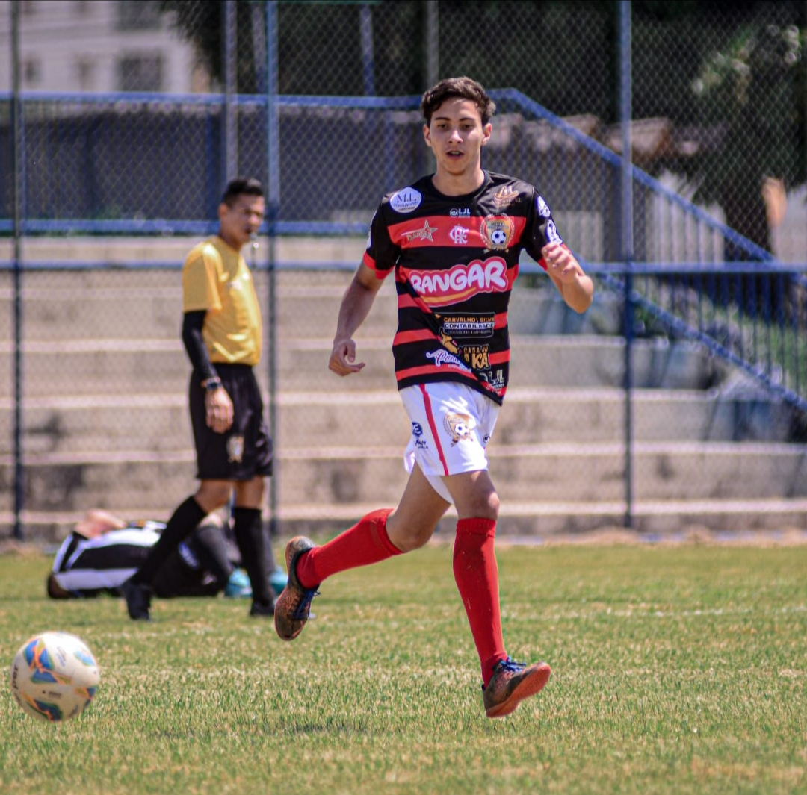
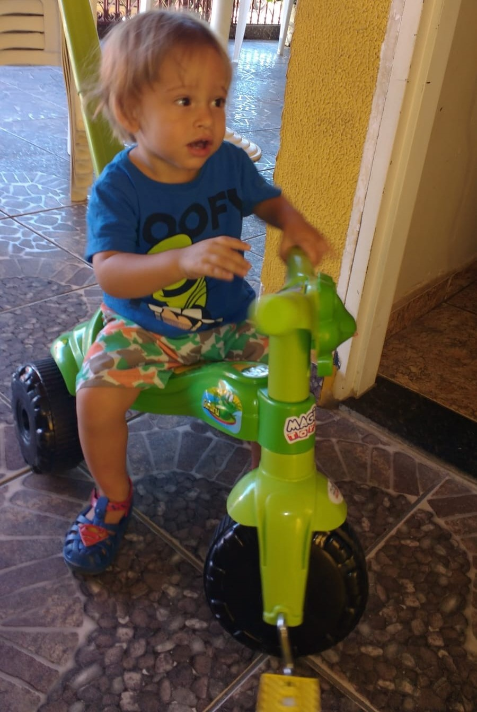
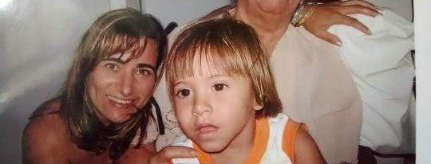
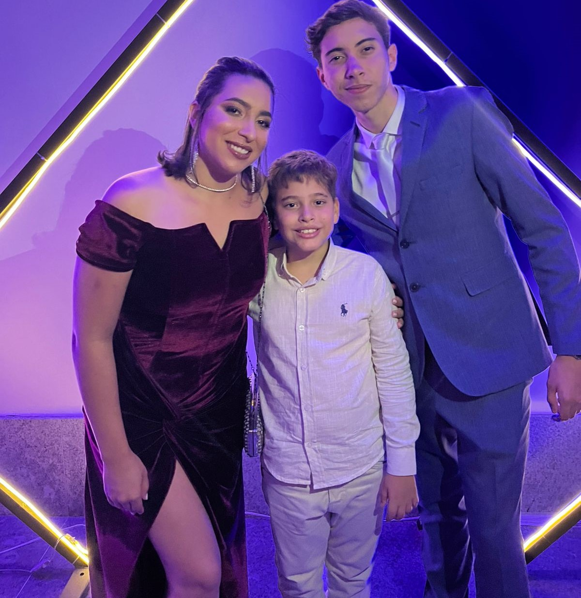
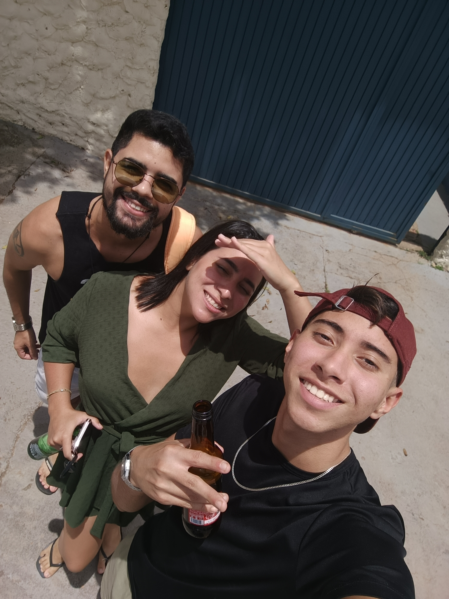
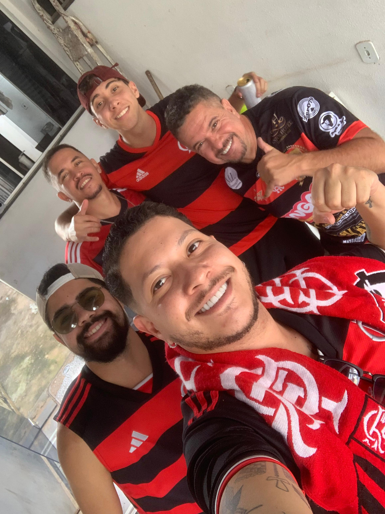
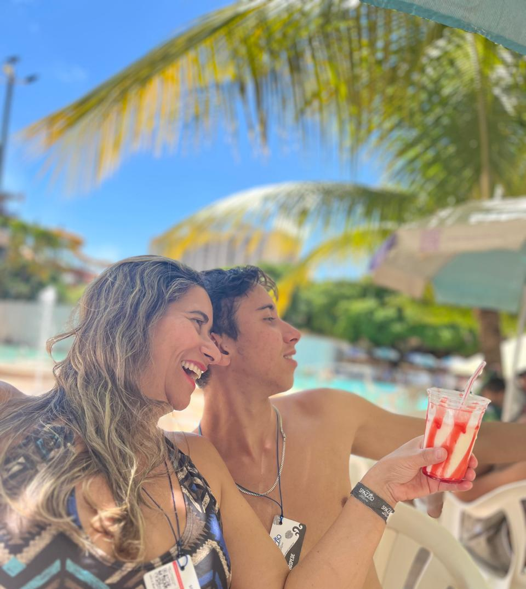
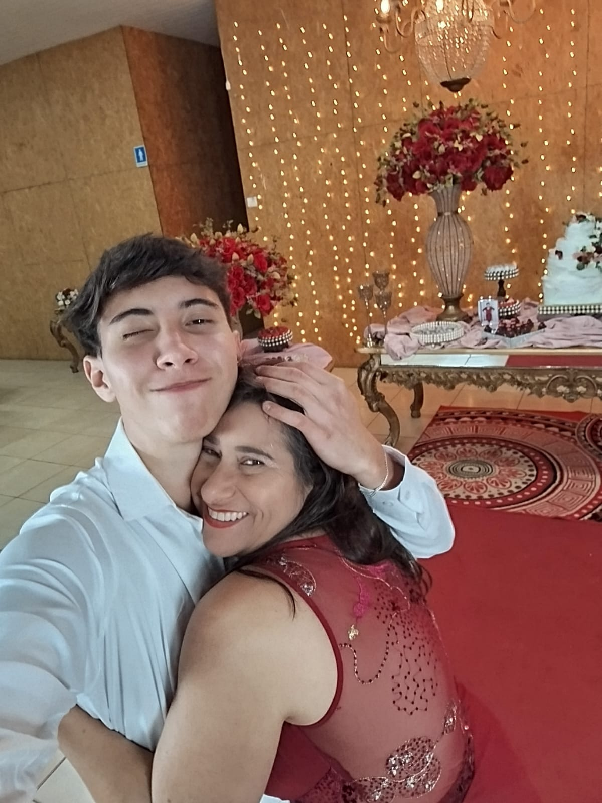
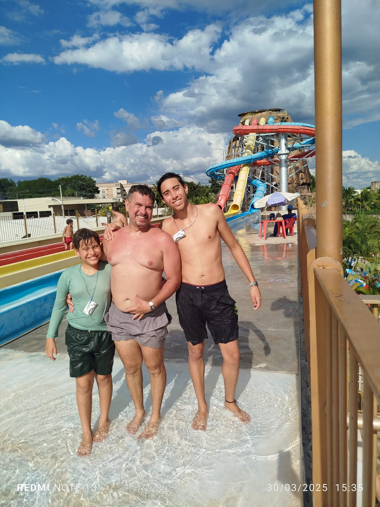

Jackson Júnio
Discente de Analíse e Desenvolvimento de Sistemas

Discente de Analíse e Desenvolvimento de Sistemas
Esta página foi criada como avaliação pessoal das minhas habilidades referentes ao HTML, CSS e JavaScript, o projeto tem um toque visual próprio, com um botão de modo claro, caso o leitor queira alterá-lo, possui muito CSS para tornar tudo melhor visualmente. Nesse projeto eu visei contar. Um pouco sobre a minha vida, minha história, e os caminhos que me levaram a estar onde eu estou, todo o conteúdo escrito nessa página é verdadeiro e faz parte da minha trajetória, ela foi dividida em 3 grandes grupos principais: (Minha Infância), (Minha Família e Educação), (Meus Momentos).

Minha Infância foi muito importante para mim, e o momento onde nos construímos caráter, descobrimos o que é certo e errado aprendemos a fazer escolhas e entendemos um pouco sobre o mundo, sobre nos mesmos, tomamos consciência de quem somos e onde estamos, todo esse processo de vida foi de suma importância para mim, tudo isso me fez ser quem sou, essa parte da minha vida aprendi muito, descobri que através do estudo posso ir longe, aprendi que quando colocamos trabalho e empenho em algo aquilo da certo, desde muito novo sempre fui muito apegado aos meus pais, meu pai me ensinou a praticar esportes, o que é certo, como devo agir, e com ele aprendi muito, minha mãe me ensinou a ter disciplina, a amar, sobre como devo me portar e respeitar as pessoas, isso tudo formou meu caráter, era uma criança muito tranquila porem curiosa nunca aceitei um não como resposta, sempre perguntava o porquê não poderia fazer algo, e assim que recebesse uma justificativa valida a partir do meu entendimento, ai sim eu entendia e geralmente concordava, nunca fomos ricos de questão monetária, porem nunca fomos pobres, sempre tive uma boa Educação sempre foi um pilar que nunca me foi negado, vou ser eternamente grato por isso, e pretendo oferecer o mesmo aos meus filhos, com tudo sempre me esforcei sempre fui atrás de fazer com que esse investimento deles desse retorno, e acredito que esteja no caminho certo, minha infância foi ótima e tenho muita sorte de ter a família que eu tenho.

Agradeço muito pela minha família, vim de uma família grande tanto de parte de pai quanto de parte de mãe, a família de parte de mãe e descendente de italiano, graças a isso consigo tirar minha cidadania, não fiz isso porque é caro, a de parte de pai desconheço a descendência, como minha família sempre foi muito grande sempre teve muita festa, reunião, encontros, isso tudo fez parte da minha infância, a casa todo final de semana estava cheia, todo mundo se ajudando, os homens no churrasco e as mulheres no almoço, la em casa sempre foi assim, e cresci assim, rodeado de primos e tios, sempre brincando com um clima leve, parecia que a vida era uma festa, hoje em dia após discursos a família já não é mais tão unida, a família de parte de pai sempre foi de longe então os encontros eram raros, porem sempre manteve o amor e a consideração, a distância e um impedimento até hoje, fica menos recorrente ver eles, porem a gente sempre tenta, já na minha educação como eu havia dito antes, sempre entendi que o estudo era o caminho e sempre valorizei o esforço que meu pai sempre fez para me colocar em escolas boas e graças a deus uma faculdade boa também, ele sempre quis que eu pascesse em um concurso publico e essa e a meta, então continuo meus estudos, agora na área que é do meu interesse, estou muito longe de onde comecei e cada vez mais perto de chegar aonde quero, estudei no JMJ, depois no Projeção e por fim agora na faculdade, estou cursando ADS na católica.

Na vida de todo mundo existem momentos que a gente se lembra, dando uma olhada nas fotos que coloquei nesse projeto me lembro de vários, a minha vida sempre foi muito agitada, e eu gosto disso, gosto de sentir que estou vivo, gosto de sentir sensações novas, eu acredito que viemos para esse mundo para aproveitar a vida, cada um da sua maneira, obvio que existem momentos ruins, momentos difíceis, mas acredito que esses momentos existem para tornar a nossa vida única, para deixar as sensações boas melhores ainda, para nos lembrar que tudo no final vale a pena, um momento muito único que eu gostaria de citar foi a minha formatura de conclusão do ensino médio, foi uma festa espetacular, com muita dança, todo mundo se divertindo, bebendo e vivendo, esse momento foi incrível, e logo depois da formatura eu tava virado, ainda fui jogar um jogo beneficente na samambaia (ser novo tem suas vantagens), outro momento que diferiu do comum foi uma viagem que fiz para a chapada dos veadeiros com a minha irmã e meu cunhado, la a gente bebeu se divertiu numa piscina, minha irmã rapou a minha cabeça (e um ritual de passagem da família) depois disso fomos comer em um restaurante chamado cavaleiro, todo temático com comida MUITO CARA e foi um dos melhores jantares da minha vida, a viagem para o Park aquático do diroma que fui com meus pais também foi ótima, tranquila e relaxante, com muita diversão e lazer, em geral, esses momentos são os que vou me lembrar quando estiver mais velho, momentos leves, sem ter preocupação com trabalho, com dinheiro, com problemas em geral, e só você e seus companheiros de vida felizes por estarem se sentindo vivos, e na minha cabeça e assim que a vida deve ser
Sou apaixonado por esportes — especialmente o basquete, meu preferido, esporte pelo qual tive a honra de representar a equipe do Colégio Projeção nos jogos do JET e até ser eleito jogador destaque em três partidas. Além do basquete, futebol, vôlei, corrida e ciclismo fazem parte da minha rotina e representam muito mais do que competição: são fontes de energia, saúde e conexão com a vida. Também sou fascinado por experiências que me façam sentir verdadeiramente vivo, como dirigir — algo pelo qual tenho uma verdadeira paixão — e viver momentos radicais sempre com uma boa trilha sonora ao fundo. Aliás, não consigo fazer nada sem música. Sou bastante eclético, mas tenho um carinho especial por sertanejo universitário e raiz, funk, trap e boombap. Tenho muito apreço por coisas simples e autênticas, como boa comida, tempo para relaxar e a chance de viajar — são nessas viagens que encontro paz de espírito. Carrego comigo lembranças marcantes, como os momentos com meu avô que me ensinou a arte da carpintaria e marcenaria: cortar, lixar e moldar madeira com as próprias mãos foi uma das formas mais bonitas de aprendizado e afeto. Gosto de estar com minha família, compartilhar tempo e criar memórias. Também sou curioso e criativo: ainda no 9º ano, construí um carrinho funcional para meu irmão usar em uma feira de ciências. Isso se conecta com outra grande paixão: a mecânica e a criação de projetos. Hoje, curso Análise e Desenvolvimento de Sistemas e tenho encontrado na programação uma forma de unir lógica, criatividade e propósito. Acima de tudo, gosto de ajudar as pessoas — seja com um gesto simples, um projeto, ou dividindo o que aprendi pelo caminho.
Essa são as fotos de alguns momentos que considero importante e especial na minha vida, cada foto possui sua história, e sou muito grato por ter vivido todos esses momentos!
Obrigado por lerem este Ebook, um abraço.




